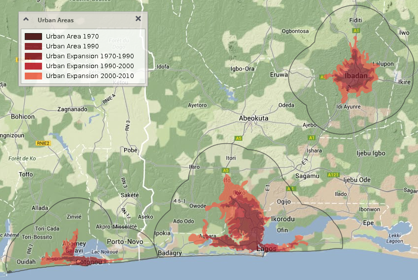
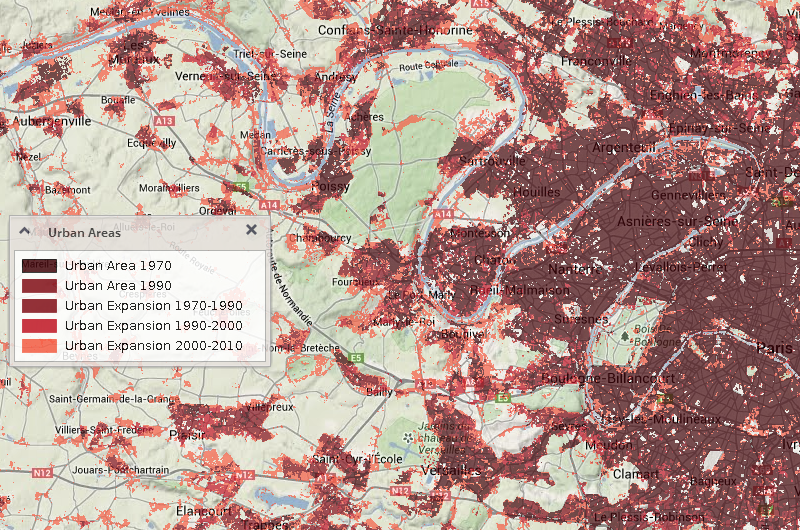

Global scope: Development of Urban footprint
This scope provides an example of analysis on global geographical level. It gives you a possibility to compare urban footprint extents of large metropolises (largest Central and South African cities and Paris metropolitan area) as well as comparison of urban footprint extents in different years (1990, 2000 and 2010 for African cities with 1970 for Paris area) for each city area.

In this analysis, Urban footprints of African cities (1990, 2000, 2010) are presented. This dataset represents urban extents of 31 African cities for each target time period (1990, 2000 and 2010). Existing urban areas were defined through digitization based on satellite imageries (Landsat Thematic Mapper or Landsat Enhanced Thematic Mapper, depending on year, with 30m spatial resolution and seven multispectral bands: blue, green, red, near infrared, mid-infrared, and mid-infrared). Imageries acquired as close to 1990, 2000 and 2010 as possible for each city were used as a source. Within the imagery, each built up portion of the city (where buildings were visible) was identified and then a polygon was drawn around the visually identified area. The polygon was extended to areas that were within 1.5 km of the neighboring area. Therefore, if a visually identified area of buildings had a gap between it and the next area went out over 1.5km these areas where not added to the city polygon, however if it was within 1.5km the area was included. The dataset was produced by the George Washington University for the WB Report "The Future of Water in African Cities". The detailed description of methodology can be found at the p. 126 of the following report:
http://water.worldbank.org/sites/water.worldbank.org/files/publication/iuwm-africa.pdf
For Paris metropolitan area, two different datasets are used as a source of aggregated statistical information:
the Global Urban Footprint (GUF) dataset based on TanDEM-X (TDM) SAR data representing footprint extent in 2010 and
the Urban Footprint data based on Landsat imageries representing footprint extent in 1970-2000
Both these data sources are joined into one raster layer as follows:

The Global Urban Footprint (GUF) is a global database of binary settlement masks. It is the resulting geo-information product derived from the TanDEM-X (TDM) SAR data. This urban footprint (UF) mask is being produced by German Aerospace Center (DLR).
The Urban Footprint data coverage for Paris area represents urban footprint between years 1970 - 2000. The product is based on Landsat satellite imageries and has also been prepared by German Aerospace Center (DLR).